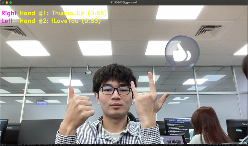
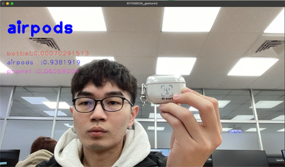

👤 關於我
你好，我是周柏均，目前就讀於 台灣科技大學企業管理系 的學生，目前專注於 音樂製作與攝影 的創作。
我相信每一段旋律、每一幀畫面，都能成為表達情感的語言。我的創作理念是——「能夠清楚表達出當下的感受」。不論是鏡頭下捕捉的光影、還是音符中流動的情緒，我都希望能讓觀者與聽者感同身受。
這個網站是我整理與呈現創作成果的平台，也是一個不斷成長的紀錄。歡迎你翻閱我的作品，感受那些來自生活、來自內心的瞬間。
我的技能
- 攝影 (人像、風景、街拍)
- 音樂製作 (編曲、混音、母帶)
- 網頁基礎 (HTML, CSS)
- 專案管理
📸 攝影作品


🎧 音樂作品
📚 課堂作業
這裡展示我在課程中完成的一些作業與專案截圖。
第一張為運用mediapipe偵測手勢
第二張為運用teachablemachine辨識物品


💻 GitHub 專案
這是我近期完成的一個專案，歡迎點擊下方連結查看詳細程式碼與說明：
📫 聯絡我
若你對我的作品有興趣，歡迎與我聯繫或關注我的社群帳號：
- Email：oscar987455123@gmail.com
- Instagram：@oscar._.626
- Phone：0905114792